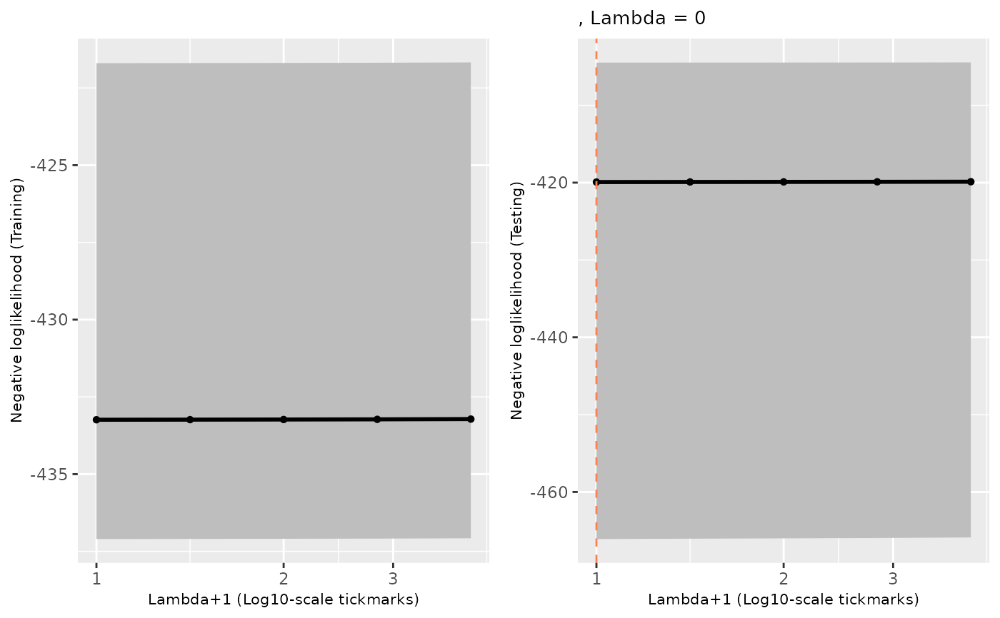

Cross-validation diagnostic: training and held-out curves over the lambda path
Source:R/plot_trainTest.R
plot_trainTest.RdThe standard check on a cyfer() run. Two side-by-side panels, training
on the left and held out on the right, each showing the median across folds
of the unpenalized objective at every lambda, with a shaded band between the
outer two quantiles. A dashed vertical line on the test panel marks the
selected lambda.
Usage
plot_trainTest(
cv_fit_list,
axis_size = 8,
bool_include_lambda_title = TRUE,
fill_col = "gray",
quantile_vec = c(0.1, 0.5, 0.9),
xlab = "Lambda+1 (Log10-scale tickmarks)",
ylab_test = "Negative loglikelihood (Testing)",
ylab_train = "Negative loglikelihood (Training)",
title_size = 10,
title_test = "",
title_train = ""
)Arguments
- cv_fit_list
An object of class
"cyfer", i.e. the return value ofcyfer. Asserted.- axis_size
Point size of the axis titles. Default
8.- bool_include_lambda_title
Whether to append the selected lambda to the test panel's title. Default
TRUE.- fill_col
Fill colour of the inter-quantile band. Default
"gray".- quantile_vec
Length-3 increasing vector of quantiles across folds: band lower edge, centre line, band upper edge. Default
c(0.1, 0.5, 0.9). The centre line is also what the displayed lambda is chosen by, soquantile_vec[2]must be0.5— that is whatcyfer_finalizeselects by, and a different centre would draw a dashed line at a lambda the refit never uses. Only the two outer entries are free.- xlab
X axis label, shared by both panels. Default
"Lambda+1 (Log10-scale tickmarks)".- ylab_test, ylab_train
Y axis labels. Defaults name these curves "negative loglikelihood"; they are the unpenalized objective, for which lower is better, and not a literal log-likelihood.
- title_size
Point size of the panel titles. Default
10.- title_test, title_train
Panel titles. Default
"".
Value
A ggplot object: the two panels combined by
cowplot::plot_grid().
Details
What a healthy curve looks like: the training objective falls monotonically
as lambda shrinks, while the test curve turns up again at small lambda, and
the dashed line sits in that interior minimum. Two failure modes are visible
at a glance — a flat test curve, and a dashed line pinned at the right-hand
end. Both mean the fit did not move. Ties in the test curve resolve to the
largest lambda, because which.min() takes the first hit and
lambda_sequence is decreasing, so "selected lambda equals the ceiling
I set" is a symptom of a broken fit rather than of under-regularization.
The x axis is lambda + 1 on a log10 scale, since the path runs down to
exactly 0.
Examples
# \donttest{
data(priming_simulation)
cv <- cyfer(cell_features = priming_simulation$cell_features,
cell_lineage = priming_simulation$cell_lineage,
lineage_future_count = priming_simulation$lineage_future_count,
lambda_initial = 3,
lambda_sequence_length = 5,
num_folds = 5,
verbose = 0)
plot_trainTest(cv)

# }